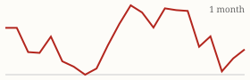
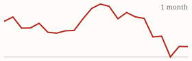

| Today's briefing for operators |
Top line: Pending home sales just set an all-time low |
|
| Wednesday, October 21, 2026 | Late Edition | Curated from 63 voices on X |
|
Real Estate
Pending Home Sales Hit the Lowest Level Ever Recorded
Nick Gerli says the NAR pending home sales index fell to 66.0 in September 2026, the worst reading in the data set.
By @nickgerli1 |
Nick Gerli's chart of the NAR pending home sales index. Image via @nickgerli1 on X | According to Nick Gerli, the index is now 50% below the pandemic peak, 35% below 2019 levels, and lower than any point during the 2008-09 crash. In a follow-up he notes that buyer demand keeps setting new lows month after month, even as a handful of counties, mostly AI-boom areas and wealthy New York suburbs, still see values climbing. |
For a CEO in real estate, slower retail sales usually mean longer days on market, more motivated sellers and pickier end buyers. It's a good week to tighten underwriting, price exits conservatively and make sure your buyer list is deep enough to move inventory when fewer people are buying. |
|
| Read on X |
|
Mortgage Rates & Markets | Mortgage Rates Today's average lender rates | 30-year fixed | 7.40% | -0.03 | | 15-year fixed | 7.05% | -0.02 |
Daily change vs. prior day. Source: Mortgage News Daily, as of 10/20/2026 (updated weekdays about 4 PM ET). |
|
S&P 500 Close of Tue, Oct 20 S&P 500 7,712.57 ▲ +21.84 (+0.28%)  Yahoo Finance chart data (daily closes) |
|
Nasdaq Composite Close of Tue, Oct 20 Nasdaq Composite 26,424.82 ▼ -6.07 (-0.02%)  Yahoo Finance chart data (daily closes) |
|
| Real Estate & Deals | An AI Skill That Underwrites in 30 Seconds By @coleruudjohnson Cole Ruud-Johnson says his team uses a Claude Skill that connects to property data APIs and their internal tools and returns a pro forma in about 30 seconds, across asset classes. Faster first-pass underwriting means more offers out the door per person. Read on X |
Don't Rush the Price Drop By @Jacob_Naviaux Jacob Naviaux says that early in his flipping career he cut prices every couple of weeks when a house didn't sell. Now he holds off when there isn't an active comp at the same or a lower price. Read on X |
Three Tabs for Every Underwrite By @Jacob_Naviaux Jacob Naviaux keeps Google Maps (historical street view and 3D satellite), the local MLS for comps, and Zillow open on every deal. He says he can't imagine comping off Zillow alone. Read on X |
Nick Gerli's list of 15 counties with surging home values. Image via @nickgerli1 on X 15 Counties Still Booming By @nickgerli1 Even with demand at record lows, Nick Gerli flags 15 counties with surging values, mostly dense AI-boom areas like San Francisco and wealthy New York suburbs such as Westchester and Bergen. Read on X |
| AI Briefing | OpenAI's team tasks announcement graphic. Image via @OpenAIDevs on X ChatGPT Adds Recurring Team Tasks By @OpenAIDevs OpenAI says teams can now automate recurring work in ChatGPT, like a Friday roundup of what shipped and what's blocked, and teammates can review results and adjust what the next update covers. Read on X |
Perplexity Computer Now Runs Fully on a Mac By @perplexity_ai Perplexity's agent can now run entirely on your Mac, working with native apps and local files without sending sensitive data to the cloud. Read on X |
Turn Screen Recordings Into SOPs By @nicksaraev Nick Saraev outlines a pipeline that screenshots your work every five seconds, has AI pull out the standard operating procedures, and turns them into tested, reusable skills. It's a blueprint for documenting how your best people actually work. Read on X |
Wanting to Be Rich Isn't a Plan By @PeterDiamandis Peter Diamandis says a real business plan starts with whose life you want to improve, what it'll cost, how long it'll take, and which people have given up hope. Read on X |
From Exit to AI Teacher By @Sabrina_Ramonov Sabrina Ramonov shares that she co-founded a speech analytics startup sold to Pegasystems in 2021, then started teaching people outside Silicon Valley to use AI, and says she hated making content at first. Read on X |
| Business & Leadership | Your Worst Person Is Your Standard By @AlexHormozi Alex Hormozi says elite teams are built through elimination: the weakest person you keep is the standard you've accepted. Raise the bar from the bottom, not by adding stars at the top. Read on X |
Single Player vs. Multiplayer By @LeilaHormozi Leila Hormozi says most founders start in single player, selling, delivering and fixing everything themselves. It works to get going, but it has a ceiling, and growth means building a team that produces results without you. Read on X |
You Didn't Over-Expand By @AlexHormozi Alex Hormozi's one-liner: "You didn't over-expand. You under-talented." Before blaming growth for the chaos, check whether you hired the people to carry it. Read on X |
|
The Hyre Times is compiled each morning by Groky from public posts on X plus public rate and market data. Summaries reflect the authors' own claims and have not been independently verified. Not financial advice. © 2026 Hyre Times. |
|